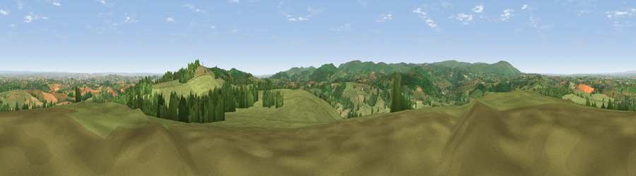

Viewpoint near Drewsteignton
#2568 in England · top 3% of its area beats it · near DrewsteigntonThe view, rendered

A 360° render of this exact spot computed from the terrain model, tree cover and land cover — summer colours, afternoon light, calibrated against photographs of famous viewpoints. Real trees, hedges and buildings will differ in detail.
The panorama
Grey silhouette: terrain skyline in each direction (720 bearings, Earth curvature and refraction included). Dashed green: skyline with trees (+15 m) and buildings (+8 m) as obstacles. Blue strip: how far the ground is visible on each bearing.
Where the view opens
Wedge length = distance to the farthest visible ground on that bearing (vegetation-aware). Rings at 10, 25 and 50 km.
What fills the view
71% grassland · 20% woodland · 8% cropland ·
Angular shares of the visible panorama (visual magnitude), not map area. Landscape diversity 0.35 (0–1 Shannon).
Key numbers
More beautiful places nearby
The staircase of upgrades: each row has a higher view potential than everything closer. Driving times are estimates from straight-line distance, calibrated against real road routing — check an actual route before setting out.
| Place | Direction | Drive | Score |
|---|---|---|---|
| Butterdon Hill | ESE · 1 km | ~4 min | 76.4 |
| Viewpoint near North Bovey | S · 7 km | ~14 min | 77.8 |
| Viewpoint near North Bovey | S · 7 km | ~14 min | 79.3 |
| Cairn | SSE · 10 km | ~20 min | 79.8 |
| Viewpoint near Haytor Vale | SSE · 11 km | ~21 min | 80.1 |
| Viewpoint near Buckland in the Moor | S · 16 km | ~28 min | 80.7 |
| Viewpoint near Kenton | ESE · 20 km | ~34 min | 82.9 |
| Viewpoint near Holcombe | SE · 24 km | ~39 min | 83.3 |
50.68627, -3.78679 · source: screening · position refined by local search. Computed location — check access rights before visiting.